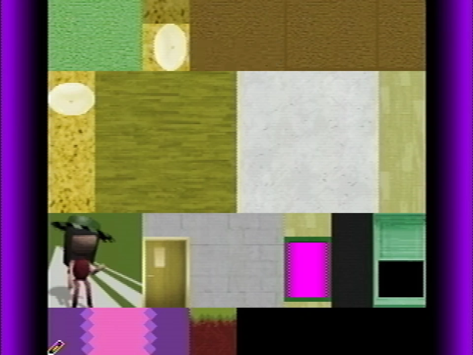
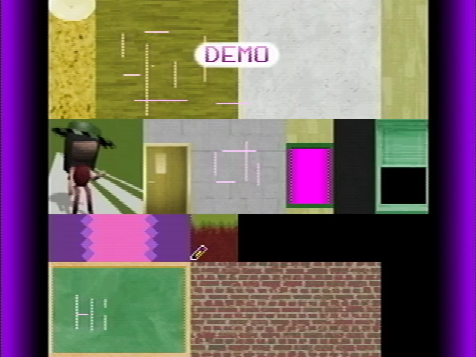
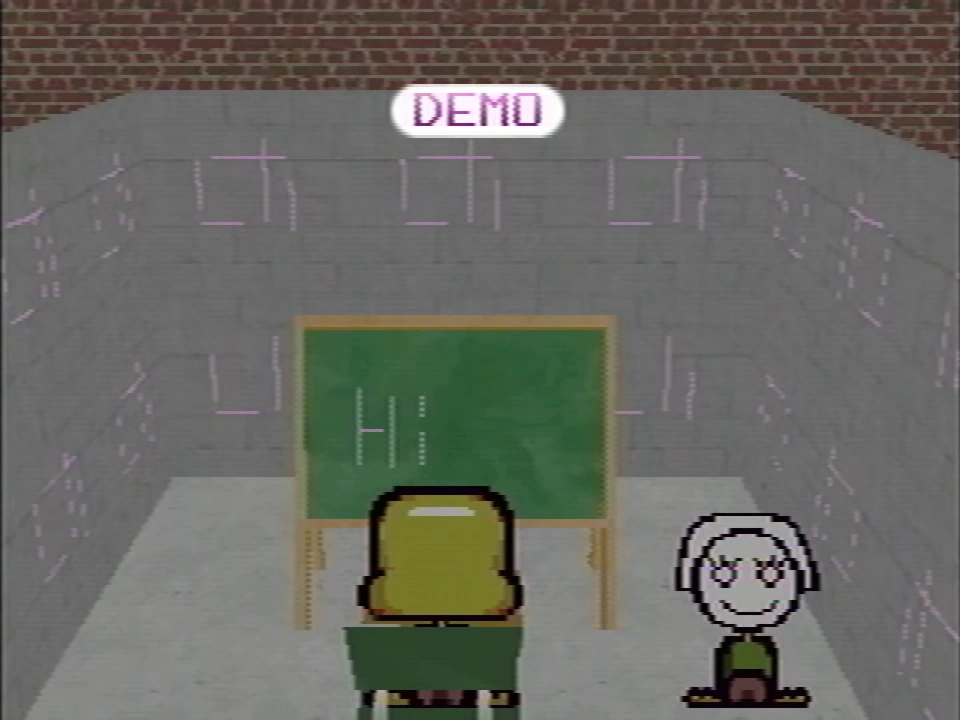

Draw Mode
{kind=link}

{kind=link}
The part of the texture editor seen in Petscop 15.
Draw Mode is a hidden menu that appears to be a VRAM viewer and rudimentary texture editor. It is first directly shown in Petscop 15, but may have been used by other players as early as Petscop 5.
It can be accessed by a code input on the P1 controller:
With P2 to TALK (on the P2 controller), this phonetically spells "Nifty".
During Petscop 15, the player is taught the code to access the texture editor by Tiara. Tiara appears to make use of it again in Petscop 23, and is likely to have been using it through the pink tool in Petscop 5 and Petscop 7.
Function
{kind=link}

{kind=link}
The player drawing lines onto the game's textures via Draw Mode
Textures recently accessed by the player (or that possibly may be soon accessed) are displayed in an atlas. (In Petscop 15, most of the textures come from the school, where the code was used.)
{kind=link}

{kind=link}
Lines drawn via Draw Mode are visible in the game
A pencil tool can be used on the textures that can draw lines in pink. After exiting the menu, the drawings will be retained on the textures as they are shown in game.
Sprites do not appear to be included in the atlas.
Theories
Someone could have possibly used Draw Mode to modify the red tool to communicate with the player and recolor it pink.